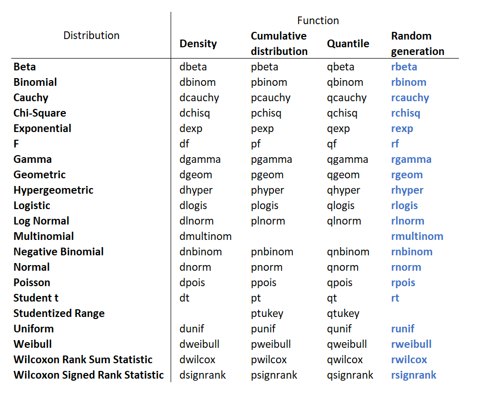

At the very basis of data analysis and statistics, lies the concepts of pattern and randomness. So far, we’ve mostly used R to detect patterns or relationships in data, using graphs, summary statistics, statistical tests or statistical modelling.
But we can also use R to generate randomness, which is essential for things like creating random samples, randomising treatments, doing simulation studies, or performing sampling or randomisation-based statistical analysis. We will learn how to generate randomness in the first part of this workbook.
In addition to looking for patterns or generating randomness, we can also use R to build new tools that will help us in our tasks. That is we can program and create functions. That’s what we’ll look at in the second part of this workbook.
Finally, we should not forget that a lot of tools are already available, so we rarely need to reinvent the wheel, and in the third part of this workbook, we will see how we can find good packages.
This workbook does not rely heavily on data, but we are going to use the dataset ‘storms’ that is provided as part of the dplyr package from time to time. The ‘storms’ dataset is a subset of the Atlantic hurricane database. In it, we will find six-hourly information on location and attributes for 198 tropical cyclones.
The columns making up the dataset are as follows:
| Column | Description |
|---|---|
| name | Storm name |
| year | Year of report |
| month | Month of report |
| day | Day of report |
| hour | Hour of report (UTC) |
| lat | Latitude |
| long | Longitude |
| status | Storm classification (Tropical Depression, Tropical Storm, or Hurricane) |
| category | Saffir-Simpson storm category (-1 = Tropical Depression, 0 = Tropical Storm) |
| wind | Storm’s maximum wind speed (in knots) |
| pressure | Air pressure at the storm’s center (in millibars) |
| ts_diameter | Diameter of area experiencing tropical storm strength winds (34 knots or above) |
| hu_diameter | Diameter of area experiencing hurricane strength winds (64 knots or above) |
The base-R function to generate a random sample from a list of values is sample(). It needs the list of values as the first argument, and the number of values to sample as the second argument. To sample 5 different random values between 1 and 10, we would write the following command:
sample(1:10, 5)The second argument is optional though and if we omit it, R generates as many random values as there are elements in the list of values. That is, it just permutes the list of values indicated as the first argument.
sample(1:10)By default sample() samples without replacement, so we get an error if we ask for more values than there is in our list
sample(1:10, 20)But we can ask R to sample with replacement using the argument replace=TRUE:
sample(1:10, 20, replace=TRUE)sample() can sample from any kind of values, not just numeric ones. For example, if we had two treatments that we wanted to allocate randomly to say, 20 individuals, we could do so with the following command:
sample(c("Treatment 1", "Treatment 2"), 20, replace=TRUE)And we can also assign probability weights to our list of values, so that some values get picked more often than others, using the argument prob. Here is how we’d ask R to randomly pick 50 values out of “control”, “treatment 1” and “treatment 2”, if we wanted the value “control” to get the same probability of being picked than the two treatments combined:
sample(c("Control", "Treatment 1", "Treatment 2"), 50, replace=TRUE, prob = c(0.5,0.25,0.25))sample(c("Control", "Treatment 1", "Treatment 2"), 50, replace=TRUE, prob = c(4.2,2.1,2.1))slice_sample() for randomly sampling rows of a dataset. We need to indicate the dataset first, and then we either indicate the argument n, the number of rows that we want to sample, or prop, the proportion of rows that we want to sample. The argument “replace=TRUE” can also be used if we wish to sample with replacement. Let’s sample 10 rows randomly from the dataset storms
storms %>%
slice_sample(n=10)We can also generate random numbers from theoretical distributions, which is useful to simulate data. The function to generate random numbers from a normal distribution is rnorm(). Its arguments are
So to generate three random numbers coming from a normal distribution with mean 2 and standard deviation 0.5, we would write the following command:
rnorm(n=3, mean=2, sd=0.5)If we omit the arguments mean and sd, R will pick the default values that are 0 for the mean and 1 for the standard deviation. That is we will be drawing numbers from a standard normal distribution:
rnorm(n=3)Let’s use rnorm() to simulate a dataframe with 100 observations and two normally distributed variables var1 and var2:
randomData <- data.frame(var1=rnorm(n=100, mean=0, sd=1),
var2=rnorm(n=100, mean=3, sd=2))
randomDataPretty straightforward, no?
Let’s now make a scatter plot from such simulated dataset:randomData <- data.frame(var1=rnorm(n=100, mean=0, sd=1),
var2=rnorm(n=100, mean=3, sd=2))
randomData %>%
ggplot(aes(x=var1, y=var2))+
geom_point()Looks pretty random.
We can draw random number from other types of theoretical distributions. The most commonly used functions to generate random numbers are probably these ones:
rnorm() which samples from the Normal distributionrbinom() which samples from the Binomial distributionrpois() which samples from the Poisson distributionrunif() which samples from the Uniform distributionNote that the Uniform distribution corresponds to the situation where all the numbers in an interval have equal probability of being picked. So runif() is the function to use when we want to randomly pick a number between 0 and 1.
If you feel you need some refresher on the concept of probability distributions, here is a pretty good series of videos.
The first argument for all of these ‘rfunctions’ is n, the number of random values to generate. The arguments that follow specify some eventual parameters for the distribution. For rnorm() it was the mean and the standard deviation, but for runif(), it is the minimum (min) and maximum (max).
Here are five random numbers coming from a uniform distribution on the interval [0 - 10]:
runif(5, min=0, max=10)rbinom(6, size=10, prob=0.1)The help of R - that we access with ? is quite good to know what to write inside the brackets as all these functions work the same way, except for the parameters of the distribution.
?rbinomYou might be confused to see four functions in the help page for rbinom() though:
That’s because in general, R provides four functions for each theoretical distribution. Their names are identical except for the first letter. One is the density function of the distribution (dxxx), one gives cumulative probabilities (pxxx), one is the quantile function (qxxx) and one generates random numbers from the distribution (rxxx). In this workbook, we are only interested in generating random numbers, so we are focused on the ‘rxxx’ functions. But if you want to know more about the other functions, here is a good place to start.
And here is the list of theoretical distribution functions available in base-R. The random generation functions are on the last column.

One thing that can sometimes be an issue when we use functions that generate randomness in a script is that each time we run the script, the generated values change. Therefore, if we pass on the script to someone else, they will not get the same exact results even though they are running the same script. We can fix this though, because the generation of randomness by computers is never truly random. It is based on some algorithm that take a “seed” number as input and then generates numbers based on this seed. This “seed” is usually based on the internal clock of your computer and so it changes all the time. But we can fix the seed manually using the function set.seed() by indicating an integer - the seed - inside the brackets.
If you run the command below multiple times, you will get multiple different outputs
sample(1:20, 5)
rnorm(10)But if you run the command below multiple times, you will always get the same output
set.seed(34)
sample(1:20, 5)
rnorm(10)To learn more about how programming languages like R can generate pseudorandom numbers, have a look at this nice video.
Also note that if ever you need true randomness for your work, the package random provides functions to access the true random number service of random.org that uses real atmospheric noise to generate random numbers.
Even though R is specialised in statistical analysis and data visualisation, R remains a proper programming language that has all the capabilities of more general programming languages. In particular we can make loops, use if statements and create functions.
Loops allow one to perform some task multiple times, without having to duplicate the command for the task. Loops are fundamental in most programming languages. They are a bit less fundamental for R users as there are often ways to achieve the result of a loop by other simpler means. But they remain something useful that is worth knowing about, and in some cases, they may still be the best choice.
There are a few types of loops that one can do in R. The most useful ones are the for and the while loops. Both have a similar syntax where we write the loop keyword first (for or while), followed by a description of the number of iterations inside regular round brackets ( ), and then the task to perform inside curly brackets { }.
Let’s make a for loop that prints “Hello!” 10 times.
To print “Hello!”, we use the function print()
print("Hello!")You may wonder why we need the print function since the command “Hello!” would achieve the same result. Well a command “Hello!” works in this simple case, but inside a loop or a function, we need to explicitly say what we want to print on the screen. Otherwise nothing will be printed.
Then, to print “Hello!” 10 times using a for loop, we need to insert our command inside curly brackets and tell R how many times times it should run what’s inside the curly brackets.
for(i in 1:10){
print("Hello!")
}i in 1:10 is asking R to create an object i (we could have called it differently) and to give it the value 1, then 2, then 3, and so on, till 10. The keyword for is then asking R to perform the task inside the curly brackets each time i is given a new value. Since there are 10 elements in 1:10, R will therefore sequentially assign 10 values to i and print “Hello!” 10 times.
We can check that i is given all the values from 1 to 10 by printing i rather than “Hello!”:
for(i in 1:10){
print(i)
}And this is where you may start to understand the usefulness of this i. Thanks to it, we can make each task depend on the value of i, and so if we choose the elements of our vector wisely, we can start doing very interesting things. For example, we could ask R to print the class of each column of a dataset:
for(i in storms){
print(class(i))
}This works because for R, a dataframe is a list of columns. So i in imdb will sequentially makes i become each column of the dataframe imdb.
Another fundamental type of commands in programming are if/else statements. These are commonly used inside loops to further adapt the task to each specific iteration. The structure is fairly similar to the one for the for loop. We start with the keyword if, then inside brackets we place a condition to check, then inside curly brackets we place the task to perform if the condition is verified.
a <- 3
if(a<5){
print(a)
}We fix a equals 3. Since a is lower than 5, the condition inside the if brackets is true and R performs the task in the curly brackets, that is, it prints the value of a. If we change the value of a to 7 though, nothing is printed:
a <- 7
if(a<5){
print(a)
}But we can then add an else keyword followed by curly brackets just after the closed curly bracket of the if statement to ask R to perform another task if the condition is not verified:
a <- 7
if(a<5){
print(a)
} else{
print(-a)
}Let’s tweak our last for loop by adding an if/else statement inside. For each column of storm, if the column if of class “numeric”, we will calculate and print the mean of that column. Otherwise, we will print a message saying that we can’t calculate the mean:
for(i in storms){
if(class(i)=="numeric"){
print(mean(i, na.rm=TRUE))
}
else{
print("can't calculate the mean!")
}
}In Module 5 we mentioned how the “central limit theorem” allows us to justify the use of a t-test when we have a non-normal distribution. This is because the distribution of the sample mean tends to a normal distribution even from underlying data distributions which are extremely non-normal.
We can prove this through using a combination of the simulation functions we have seen, and using loops to create lots of simulations.
Let’s start by saying we have something which is definitely not a normal distribution. Let’s say we have 200 observations of an exponential distribution, with a mean of 10, so the ‘rate’ parameter of this distribution is then equal to 0.1.
rexp(n=200,rate=0.1)Probably the best way to look at all these numbers is in a histogram! Remember that to use ggplot2 we need to have data stored in a data frame first. So I will create a new data frame and pipe into ggplot.
data.frame(sims=rexp(n=200, rate=0.1)) %>%
ggplot(aes(x=sims))+
geom_histogram()Pretty clearly not a normal distribution! And you should see that every time you press run the distribution will change slightly, because a different simulation is being done.
It would be the same if we were calculating the mean value
mean(rexp(n=200,rate=0.1))Every time we press run, a different simulation is made, and we obtain a different mean value. But what we might want to do is simulate this process 100 times (or 1000 times, 10000 times or 100000 times) and look at the distribution of the mean values from those simulations.
We could use a for loop to run 100 simulations - we start with 100, but later, we will increase this number:
for(i in 1:100){
mean(rexp(n=200,rate=0.1))
}We have just run 100 simulations… but no output was created. We could use print, but this would just print the means in the console window, when what we really want is to store the means in a new data frame.
We could store every single simulated value from every single one of our simulations if we really wanted to. But this would quickly result in a huge data set. All we are interested in for this example is the mean value, so we can just store the mean value from each simulation and forget about the simulated values.
The simplest way to do this is to set up a new data frame, with one row per simulation, and a column for the mean values from that simulation. Right now we haven’t done the simulations yet, so we should set the second column to be missing.
sim_results<-data.frame(sim_number=1:100,sim_mean=NA)We are now ready to run our simulations! Using the combination of the mutate and the ifelse functions, we could use the approach we have learnt so far from dplyr to update the data for each of the stages in our loop.
sim_results<-data.frame(sim_number=1:100,sim_mean=NA)
for(i in 1:100){
sim_results<-mutate(sim_results,sim_mean=ifelse(sim_number==i,mean(rexp(n=200,rate=0.1)),sim_mean))
}
sim_resultsBut this code is quite long and complicated. This is a case where the base-R approach would be much more straightforward using the square brackets []. Square brackets let you select rows and/or columns based on the relative position. So sim_results$sim_mean[1] asks R for the first element of the sim_mean column within the sim_results dataset. We can then, instead of asking for the 1st element, ask for the i-th element within the loop. And assign this to be the result of a simulation
sim_results<-data.frame(sim_number=1:100,sim_mean=NA)
for(i in 1:100){
sim_results$sim_mean[i]<-mean(rexp(n=200,rate=0.1))
}
sim_resultsIn the end this is doing the same thing, but the code is quite a lot shorter.
In fact there is an even shorter way of doing this same task, using the replicate function. This function requires two input arguments - the number of simulations we want to make, followed by the output we want to replicate
replicate(100,mean(rexp(n=200,rate=0.1)))Unlike a for loop, replicate does print out everything. So we probably do want to store this into a new data frame as well.
sim_results<-data.frame(sim_mean=replicate(100,mean(rexp(n=200,rate=0.1))))However we got to our simulated results, either using the for loop, or using replicate, we probably now want to check to see what the distribution of our means is.
sim_results<-data.frame(sim_mean=replicate(100,mean(rexp(n=200,rate=0.1))))
ggplot(data=sim_results,aes(x=sim_mean))+
geom_histogram()Hmm… It doesn’t look too bad, but it’s hard to tell if it’s really normally distributed or not. Let’s increase the number of simulations to better see the distribution:
sim_results<-data.frame(sim_mean=replicate(1000,mean(rexp(n=200,rate=0.1))))
ggplot(data=sim_results,aes(x=sim_mean))+
geom_histogram()That looks pretty normal to me!
Remember that we said the central limit theorem is only valid when we have at least 20 observations? Let’s try a different simulation with only 10 values being simulated within each iteration.
sim_results_10<-data.frame(sim_mean_10=replicate(1000,mean(rexp(n=10,rate=0.1))) )
ggplot(data=sim_results_10,aes(x=sim_mean_10))+
geom_histogram()It is still not too bad - but it is clearly not a normal distribution. There is a slight negative skew in the overall distribution, because some extremely high mean values become possible with just 10 observations, but the minimum from this distribution will always be 0.
It would be nice to experiment with other numbers of observations per sample, and that would be easier to do if we knew how to create functions. Well, let’s learn how to create functions then!
When we have a set of commands that solves a problem that we expect to face multiple times, it may be a good idea to create a function out of these commands. That way we can call this function - in the same way we used all the functions we’ve seen so far - instead of having the write the commands again. Functions are a great way to keep scripts clean and readable.
We define a function using the function function() and by placing the commands for the function inside curly brackets:
function(){
}<-
myFunction <- function(){
}myFunction <- function(){
}
myFunction()Yes for now our function doesn’t do anything because there is nothing inside the brackets, so R returns NULL.
We can make the function return something, with the function return()
myFunction <- function(){
return(2)
}
myFunction()Our function returns 2 each time we call it. What an awesome function!!!
Note that in online workbooks, code windows are completely independent from each other, so whenever we are working within one window and want to use a function that is not part of the loaded libraries, we need to include the definition of the function in that window before we use the function. A bit annoying, but this is specific to these online workbooks. We don’t have this issue when we work offline with RStudio.
Usually, when we create a function, we need to give it some arguments for it to be useful. We indicate these arguments inside the round brackets of function(). Below we are telling R that the function myFunction() takes an argument called “a”:
myFunction <- function(a){
}addOne <- function(a){
return(a+1)
}addOne <- function(a){
return(a+1)
}
addOne(12)Yes, it works!!
If we call the function without providing a value for the argument, we get an error:addOne <- function(a){
return(a+1)
}
addOne()The error is telling us that “a” is missing, with no default. That’s because We can provide a default value to our argument. With a default value, we don’t get an error. R just use the default value if we don’t provide one :
addOne <- function(a=7){
return(a+1)
}
addOne()Obviously, we can have more than one argument in a function. We simply list them all inside the brackets, separated by commas. Here is a first function that takes three arguments called “hours”, “minutes” and “seconds”, make a calculation using these arguments, and return the result.
timeToSeconds <- function(hours, minutes){
result <- hours*60*60 + minutes*60
return(result)
}
timeToSeconds(2,30)As you probably figured out, the calculation turns hours and minutes into seconds and add it all. So converted in seconds, 2 hour and 30 minutes is 9000 seconds. Youhou! So useful to know!
Our arguments don’t have to be numbers, they can be anything, including dataframe. We would need that to be able to use pipes with our function.
Let’s insert our for loop that calculate the mean of all the numeric column of a dataset in a function. As a reminder, here was our loop:
for(i in storms){
if(class(i)=="numeric"){
print(mean(i, na.rm=TRUE))
}
else{
print("can't calculate the mean!")
}
}means
means <- function(){
for(i in storms){
if(class(i)=="numeric"){
print(mean(i, na.rm=TRUE))
}
else{
print("can't calculate the mean!")
}
}
}means <- function(data){
for(i in data){
if(class(i)=="numeric"){
print(mean(i, na.rm=TRUE))
}
else{
print("can't calculate the mean!")
}
}
}That way, if we call the function with a dataframe as its first argument, this dataframe will be passed in the for statement and for each column of this dataframe, R will either calculate and print the mean or print a message. Moreover, since the first argument is a dataset, we should be able to use the pipe operator. Let’s try:
means <- function(data){
for(i in data){
if(class(i)=="numeric"){
print(mean(i, na.rm=TRUE))
}
else{
print("can't calculate the mean")
}
}
}
storms %>%
means()Yes, it works!
At the end of “Application - part1”, we had manage to write this command to check how the mean of 200 random values picked from an exponential distribution with rate 0.1 was distributed:
sim_results<-data.frame(sim_mean=replicate(1000,mean(rexp(n=200,rate=0.1))))
ggplot(data=sim_results,aes(x=sim_mean))+
geom_histogram()We would like to explore it further with different values for n and rate, but for that, it would be simpler to create a function first. So let’s place our command inside a function. Let’s call this function “sim_function”:
sim_function <- function(){
sim_results<-data.frame(sim_mean=replicate(1000,mean(rexp(n=200,rate=0.1))))
ggplot(data=sim_results,aes(x=sim_mean))+
geom_histogram()
}
sim_function()Our function works, but it is not really useful for now, since we can’t change the value of n. Let’s add an argument to our function and replace 10 by the value of this argument. We’ll call this argument n_sample:
sim_function <- function(n_sample){
sim_results<-data.frame(sim_mean=replicate(1000,mean(rexp(n=n_sample,rate=0.1))) )
ggplot(data=sim_results,aes(x=sim_mean))+
geom_histogram()
}
sim_function()sim_function <- function(n_sample){
sim_results<-data.frame(sim_mean=replicate(1000,mean(rexp(n=n_sample,rate=0.1))) )
ggplot(data=sim_results,aes(x=sim_mean))+
geom_histogram()
}
sim_function(5)Yes it works.
A useful function to bring multiple graphs on the same page is grid.arrange from the package gridExtra, where we simply indicate as arguments of the function the graphs we want to be shown on the page, separated with commas:
sim_function <- function(n_sample){
sim_results<-data.frame(sim_mean=replicate(1000,mean(rexp(n=n_sample,rate=0.1))) )
ggplot(data=sim_results,aes(x=sim_mean))+
geom_histogram()
}
plot1 <- sim_function(1)
plot5 <- sim_function(5)
plot10 <- sim_function(20)
plot50 <- sim_function(50)
grid.arrange(plot1, plot5, plot10, plot50)Nice. What happens if we change the rate of of the exponential distribution? Let’s add a second argument to our function to explore that:
sim_function <- function(n_sample, rate_dist){
sim_results<-data.frame(sim_mean=replicate(1000,mean(rexp(n=n_sample,rate=rate_dist))) )
ggplot(data=sim_results,aes(x=sim_mean))+
geom_histogram()
}
plot1 <- sim_function(10, 100)
plot5 <- sim_function(10, 5)
plot10 <- sim_function(10, .1)
plot50 <- sim_function(10, .0001)
grid.arrange(plot1, plot5, plot10, plot50)Huh, it doesn’t seem to change anything. Oh but that’s because the rate of the exponential distribution does not affect the shape other than stretching in and out the distribution. And we can see that when we look at the x-axis.
Try and experiment yourself with other distributions and their parameters, to see if this central limit theorem is robust in all situations.
Also have a look at David Robertson’s Youtube channel. He has a great playlist of videos where he solves Puzzles through simulations:
So I hope we agree that creating functions in R is not very difficult. And using loops, if/else statements and a bit of randomness, we can definitely create extremely useful functions that help us in our work. But should we write these useful functions?
You may be surprised by this question, but it is a good one that we should ask ourselves when we are thinking of writing functions. Because remember that R is open source and has been around for a while now. so lots of people have written packages with useful functions. According to RDocumentation there are more than 20000 packages available on the CRAN, Bioconductor and Github. So if the function that we are thinking of writing solves a problem that other people may have, chances are that some people have already written some nice function that solves the problem in a way that is even better than we imagined, and have made it part of a package that we can freely install on our machine. That’s not to say that we should never write function. Some of us enjoy programming for the sake of programming, so we may sometimes prefer writing our own code. But if time is a concern, we should likely look at what’s existing first.
Also note that packages can also provide datasets in addition to functions, either to help one test the functions, or sometimes simply because the datasets themselves are considered of interest for the R community. The function data() gives the list of all the datasets readily available on an R session, as part of the loaded libraries.
data()In this workbook, the package tidyverse was loaded, so we have access to the datasets provided in the packages making up the tidyverse collection. If we look down towards the Datasets in package ‘dplyr’, we can see the storms dataset that we’ve been using a few times in this workbook. We also see a dataset called starwars. Since it is part of the output of data(), we have direct access to it:
starwarsI can’t resist but checking who is the oldest character in the dataset:
starwars %>%
filter(birth_year==max(birth_year, na.rm=TRUE))Right, not a surprise.
Not all the 20000 packages available are of good quality though, so it is important to know where and how to find good packages.
The place hosting the largest number of good quality packages is surely the CRAN, the official repository of R packages. To date, it hosts more than 16000 packages and to be published on the CRAN, a package needs to pass some tests that may ensure a certain degree of quality. But there are also good packages in Bioconductor, which is a curated repository hosting packages primarily targeted for Bioinformatics tasks. And GitHub, which is the most popular repository of open source projects (not specific to R) also hosts a good number of interesting R packages. There is no review process on Github though.
Now here are some ways to find good packages that will fit your needs:
First there are the packages of tidyverse . These packages are always pretty good picks.
Then there is this nice list of recommended packages, arranged by topic and updated regularly by Garrett Grolemund, a Statistician working at RStudio. A good list!
For a more consequent list of packages of good quality by topic, the CRAN Task Views is surely a good website to explore. Click on the topic that you are interested in, have a read through or do a quick CTRL+F to search for some strategic keyword.
METACRAN ranks packages based on some statistics (number of downloads, most depended upon, number of stars on github) that are likely partly correlated with the quality and usefulness of the associated packages.
RDocumentation has a search box that will bring you to the packages whose name or functions contain your keyword. You will also have some percentile rank statistics based on download count that can help in your decision.
RSeek is a search engine specific to R and when you search for a keyword, there is a tab providing popular packages related to your keyword.
Finally during your “search for help” journey on the web, the packages that appear mentioned multiple times are also probably descent packages.
Once you found the package that you need, you need to install it. The way to install a package depends on where it is hosted.
If the package is hosted on the CRAN, you can install it using the command install.packages("name_of_the_package")
or using the RStudio menu Packages -> Install
If the package is hosted on Bioconductor, you will need to load a script from Bioconductor using this command: source("https://bioconductor.org/biocLite.R") and then you can load the package of your choice using the function biocLite:
biocLite("name_of_the_package")
Finally, for packages hosted on Github, you need to load the library devtools first (which is on the CRAN, so you can use the command above if it’s not installed on you machine yet):
library(devtools)
And then you will have to use this command to install the package:
install_github("path_of_package_on_Github")
But don’t worry, for packages on Bioconductor and Github, the commands that you will need to write to install the package will probably also be given on the page describing the package.
The tidyverse website: https://www.tidyverse.org/
Garrett Grolemund’s list of recommanded packages: https://support.rstudio.com/hc/en-us/articles/201057987-Quick-list-of-useful-R-packages
CRAN Task Views: https://cran.r-project.org/web/views/
METACRAN website: https://www.r-pkg.org/
RDocumentation website: https://www.rdocumentation.org/
RSeek: https://rseek.org/
The CRAN: https://cran.r-project.org/
Bioconductor: https://www.bioconductor.org/
Github: https://github.com/
David Robinson’s youtube playlist of Riddler Puzzles solved via simulations in R: https://www.youtube.com/playlist?list=PL19ev-r1GBwl4eZGfMc6YJIYFSx8YlzBY
Probability distribution series of video from the Z Statistics website: http://www.zstatistics.com/videos/#/distributions
How to Generate Pseudorandom Numbers, Infinite Series https://www.youtube.com/watch?v=C82JyCmtKWg
Using probability distributions in R - Data Science Blog: https://www.datascienceblog.net/post/basic-statistics/distributions/